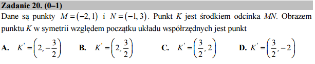

Punkty odbicia i działania na wektorach¶
Zadanie to można łatwo sformułować w języku operacji na wektorach
swobodnych. W systemie Sage istnieje objekt vector, który z
listy współrzędnych tworzy wektor w przestrzeni Eulidesowej (dowolnego
wymiaru!). W naszym przypadku mamy przestrzeń dwuwymiarową i parę
współrzędnych dla każdegu punktu.
Wektory możemy dodawać i mnożyć przez liczbę. Z drugiej strony, możemy
każdy wektor narysować jako punkt używając polecenia point.
Środek odcinka na płaszczyźnie to średnia arytmetyczną wektorów reprezentujących jego końce.
Odbicie względem początku układu współrzędnych to pomnożenie przez \(-1\).
Poniższy kod rozwiązuje i ilustruje nasze zadanie: